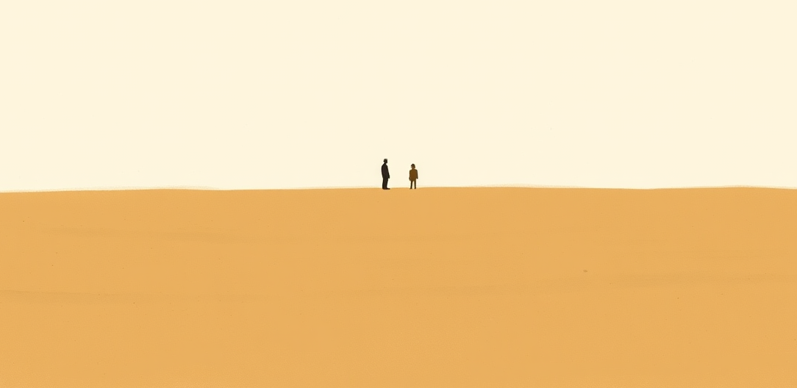

A mechanism or tactic · 15000 BC · Companion
The dog
A species that has spent fifteen thousand years being selected partly for forming attachment to one particular ape.

The original transparasocial relationship, and the only one that has reliably worked. Everything invented since is a worse version with better latency, and the reason it is compared to this constantly is that the comparison is fair.
Application. One-sided attachment put to work on purpose. Creator economies, community, fandom as infrastructure, and the things that genuinely help people. Not automatically good - a tool with an obvious use is a tool that will also get a bad one.
Where it sits
3000 BC Before 0 · 15000 BC 1 BC
Provenance · 1 source record(s)
- retrievableThe timing is genuinely unsettled and the paper says so rather than rounding it. Fossils more similar to modern dogs date to 14,000-17,000 years ago; whole-genome divergence estimates run 13,000-32,000 years ago and mtDNA anywhere from 5,400 to over 100,000; the authors place the actual domestication 'somewhere in between 15,000 and 30,000 ya'. On what was selected for: the behavioural genes under selection are response to stress, fear and defence, and a reduced fear response is offered as a candidate driver of domestication - not attachment itself. Fox selection experiments are cited as showing phenotypic change is achievable within twenty generations under selection for tameness.Parker, H. G., & Gilbert, S. F. (2015). From caveman companion to medical innovator: genomic insights into the origin and evolution of domestic dogs. Advances in Genomics and Genetics, 5, 239-255. doi:10.2147/AGG.S57678 ↗
Connected · 0 out, 9 in
Reported as a story
It sits in